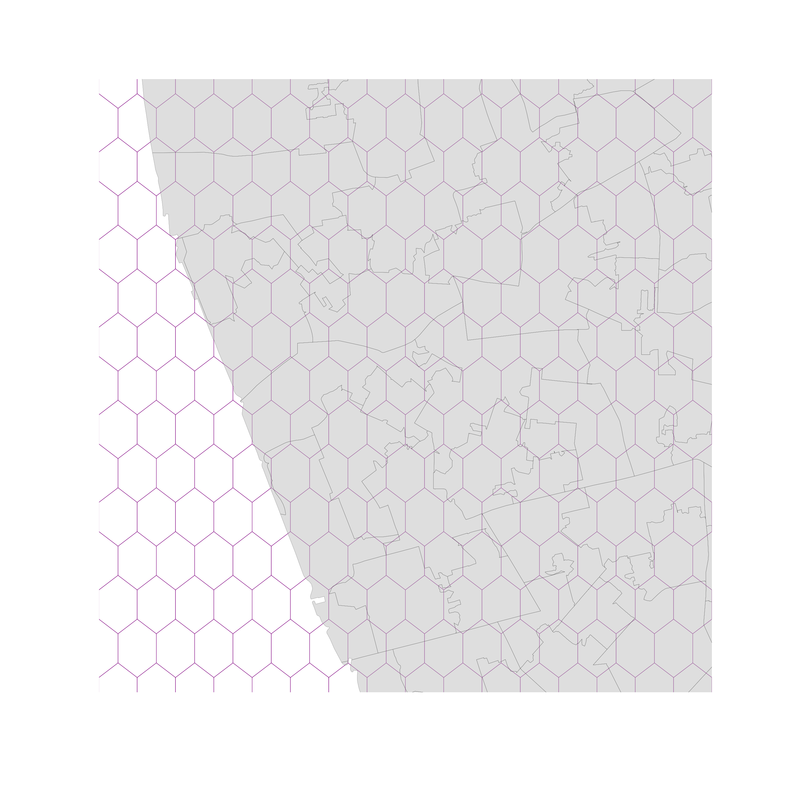
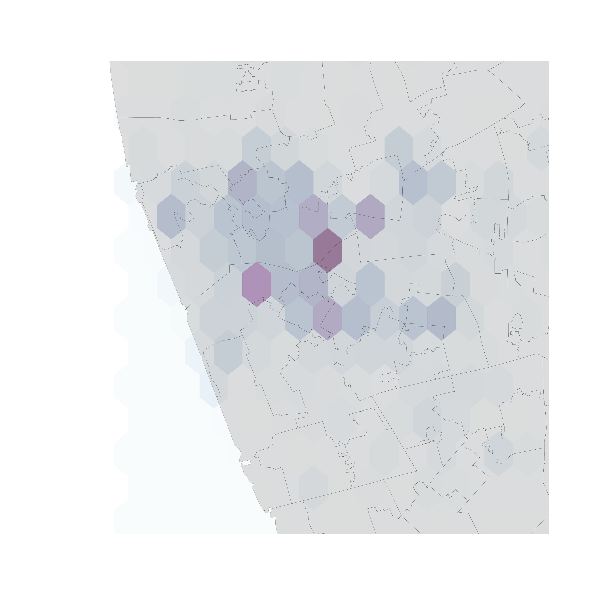
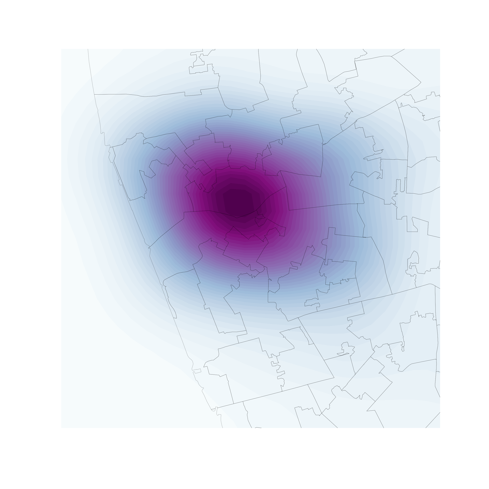

¶
Visualization of PPs¶
Three routes (today):
One-to-one mapping \(\leftrightarrow\) “Scatter plot”
Aggregate \(\leftrightarrow\) “Histogram”
Smooth \(\leftrightarrow\) KDE
¶
One-to-one¶
One-to-one¶
Intuitive
Effective in small datasets
Limited as size increases until useless
One-to-one¶

¶
Aggregation¶
¶
Use polygon boundaries and count points per area
[Insert your skills for choropleth mapping here!!!]
But, the polygons need to “make sense” (their delineation needs to relate to the point generating process)

Hex-binning¶
If no polygon boundary seems like a good candidate for aggregation…
…draw a hexagonal (or squared) tesselation!!!
Are regular
Exhaust the space (Unlike circles)
Have many sides (minimize boundary problems)
¶


But…¶
¶
Kernel Density Estimation¶
Kernel Density Estimation¶
Estimate the (continuous) observed distribution of a variable
{kind=link}
Bivariate (spatial) KDE¶
Probability of finding observations at a given point in space
Bivariate version: distribution of pairs of values
In space: values are coordinates (XY), locations
Continuous “version” of a choropleth
{data-background=../figs/l09_kde2d.png}¶
¶

¶

A course on Geographic Data Science by Dani Arribas-Bel is licensed under a Creative Commons Attribution-ShareAlike 4.0 International License.